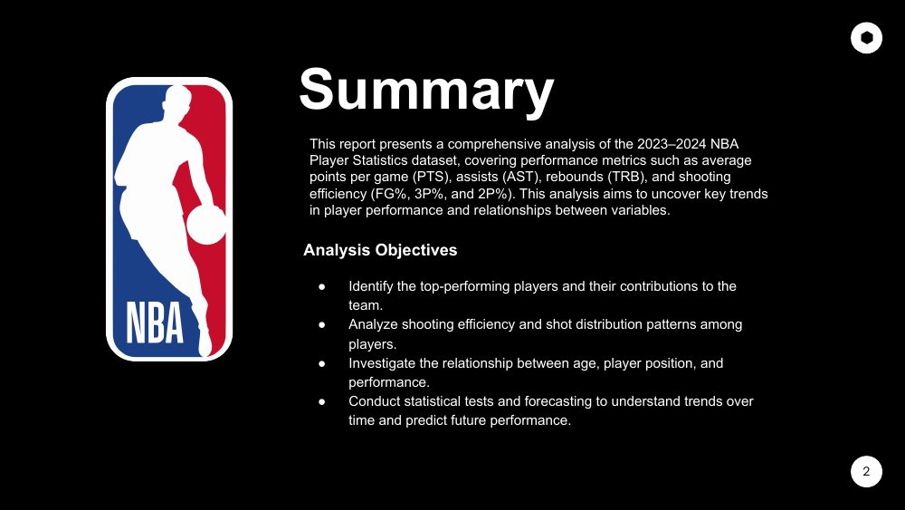

I build pipelines that turn messy raw data into something people can actually trust and query. Currently working on a CDC based medallion architecture on GCP at Rata.id.
I'm a data engineer based in Indonesia, currently working on data infrastructure for a
dental telehealth and orthodontics startup. My day to day involves designing CDC pipelines,
keeping a medallion architecture clean on BigQuery, and making sure the numbers analysts
and stakeholders see are numbers they can trust.
Outside of my day job, I take on freelance data and BI work, from dashboard builds to
pipeline automation. This site itself is an example of that kind of work: a small,
functional portfolio built end to end.
My Journey
I did not start in data. If you are a fresh graduate or switching careers into analytics,
here is the honest version of how a decade of unrelated jobs turned into a data engineering
title, in case a straight line from degree to data job is not your story either.
2011 to 2013
Waiter, then Apple technician support
Serving tables at Benihana, then handling device repairs and customer complaints at an
Apple service provider. No data work yet, but a lot of practice staying calm and
precise while someone else's problem is in front of you.
2014 to 2019
IT QA and MIS at Suzuki Finance Indonesia
Studied Computing Science while writing SQL Server queries, running scheduled report
jobs, and testing backend systems. Reporting for the board of directors here is where
I first noticed that I liked the data side of the work more than anything else on the
team.
2019 to 2022
Business and Data Analyst at Fabelio
My first title with the word "Data" in it. Building dashboards in BigQuery and Looker
Studio for an ecommerce company, and learning that a clean dataset is worth more than
a clever chart.
2022 to 2024
Regional BI Analyst at Intrepid Group Asia
Standardized 50+ KPIs and automated reporting across teams in 6 countries. This is
where dashboard building turned into thinking about data infrastructure at a regional
scale, not just one report at a time.
2024 to Present
Freelance BI work, then Data Engineer
Freelance BI and web development work on the side, a data engineering and reporting
automation contract on a Telkomsel project, and now building CDC pipelines on a
medallion architecture at Rata.id.
The pattern across all of it: SQL and reporting work kept showing up in jobs that were not
officially about data, long before any job title said so. If that sounds like where you are
right now, the skill is probably already there. It just needs a portfolio to prove it.
A collection of real BI projects: BigQuery backed sales and regional CX dashboards in
Looker, a scheduled email reporting automation on Google Apps Script, and a data
analysis notebook with statistical testing and forecasting.
My main personal site and portfolio, full stack with an admin CMS, a Postgres backed
API, and an AI assistant that can answer questions about my background.
A look at how one of my portfolio projects,
NBA Player Stats Analysis,
turns messy raw data into an actual answer instead of just a chart. These are real slides
from that project's own presentation deck.
NBA Player Stats Analysis pages

1 / •
1
11 raw snapshots
Stats scraped on 11 different dates, each file slightly inconsistent with the others.
→
2
1 clean dataset
Combined, deduplicated, encoding fixed, player names normalized so they match across files.
→
3
Statistical test
An ANOVA test checks whether a player's scoring really differs month to month, not just a guess from eyeballing a chart.
→
4
Forecast
A linear regression model predicts next month's scoring average, per player.
That is the difference between reporting a number and analyzing it. A chart shows what happened, a test
and a forecast say whether it means anything and what might happen next. This is the kind of thinking a
data analyst or data engineer is expected to show in a portfolio project, not just a pretty visualization.
Get In Touch
Want to talk data, or you're a fresh graduate / career switcher looking for portfolio feedback? Reach out.